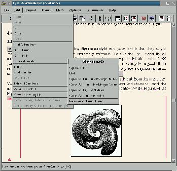
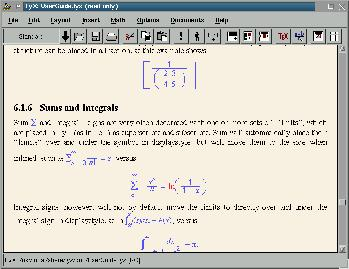

Что такое LyX
? LyX -
это WYSIWYM (What You See Is What You MEAN) редактор который
работает как front end to LaTeX. Большинство современных
текстовых редакторов развиваются согласно концепции WYSIWYG. В
противоположность этой тенденции, LyX не старается дать точное
изображение финального результата, а лишь его аппроксимацию. Он
может быть определен как нечто среднее между методом "наброска" и
страничным методом MsWord.
После этого вступления вы могли подумать что LyX - это простая и
не очень конкурентноспособная программа. Но это совершенно не так.
Важно понять, что LyX - это text typesetter, а не text composer.
С помощью word processor, вы можете помещать или изображение куда
вам угодно, или, например, вы можете выбрать точную ширину колонки
таблицы. Но этого нельзя сделать в LyX. Фактически, если вы
попробуете вставить последовательно два пробела, последний будет
проигнорирован; тоже самое происходит если вы попытаетесь произвести
два последовательных перехода на новую строку. Итак, какже тогда
возможно форматиромание текста? LaTeX делает это автоматически.
Чтобы сделать это, необходимо всего лишь ввести некоторую информацию
о структуре текста, сообщая такие вещи как нумерация и заголовки
секций, где должны быть изображения, и т.д.
Ограничение LyX на "игру" с текстом следует рассматривать не как
проблему, а как качество. Просто вспомните как много раз перед
началом написания документа вы экспериментировали с фонтами и видом
заголовков. Возможно вы приняли это важное решенье когда, написав
три или четыре страницы, вы вдруг забыли стиль заголовков второго
уровня или даже хуже, вы передумали и вам пришлось возврашаться
назад и переформатировать весь текст заново. Если наш текстовый
редактор может приримать такие тривиальные решенья самостоятельно,
мы можем полностью сконцентрироваться на том, что мы
собираемя писать, а не на том как это будет выглядеть.
Можно сказать, что LyX - это помошник редатора, издание и
конечную композицию осуществляет LaTeX.
Из собственного опыта я знаю, что множество людей кто пробовал
использовать или даже слышал о LaTeX, помнят это как неудачный опыт.
Не беспокойтесь, LyX для того чтобы помочь нам. Он справиться с
LaTeX и со всей возней связанной с компиляцией текста. Нам не
придется написать ни одной команды LaTeX (если мы не захотим).
Это главное окно LyX.

По правде говоря, вид LyX GUI и не привлекательный и не
отточенный, поскольку используеся библиотека Xforms для его
построения. Одна из целей следующей версии использовать библиотеку
GTK+, разработанную для построения GIMP (но сейчас распространяемую
как библиотека для построения GUI - прим. перев.) или/и библиотеку
Qt, лучшую библиотеку доступную сегодня и используемую для
разработки KDE (надо заметить что эта библиотека _не_
распространяется под лицензией GPL, как GTK+ - прим. перев.).
История
LyXПроект был основан Matthias Ettrich. В
настоящее время он не в проекте, поскольку является сейчас лидером
проекта KDE.
Последняя стабильная версия - 0.10.7. Она была
выпущена в конце 1996 года. Следующая стабильная версия (0.12.0)
готова к выпуску (фактически, в момент чтения вами этой статьи это
может быть текущая версия). Эта статья основана на версии
0.12.0.pre7. Продолжается работа над кодом и каждую неделю выходит
новая версия с исправленными(и новыми ;-) - прим. перев.) ошибками и
новыми возможностями. Метод нумерации (версий) сходен с нумерацией
использумой для ядра Linux: стабильные версии имеют четное второе
число, и разрабатываемые версии имеют нечетное число.
Что такое LaTeX
? Если вы не знаете, что такое LaTeX, то его
можно описать как язык форматирования документов, это что-то на
подобие хорошо известного HTML. Документы LaTeX содержат текст для
печати и некоторые команды описывающие его формат. Чтобы увидеть
документ HTML вам нужно дать его HTML браузеру, но чтобы увидеть
текст LaTeX вам нужно скомпилить его, чтобы увидеть графическое
представление называемое DVI (DeVice Indepedent). Это промежуточный
формат который нужно перевести в Postscript(или другой принтерный
язык), чтобы напечатать. Существует также DVI viewer который
позволяет просматривать результат на экране.
История LaTeX начинается с Donald E. Knuth. В 1977, не найдя
недорогой печатающей установки или wordprocessor'а для написания его
знаменитой серии "The art of computer programming", он решил сделать
TeX, который был бы мощным языком программирования для форматированя
текстов. C TeX вы можете делать все и с невероятным качеством.
Например, разрешение выходного файла 57819ppi (pixels per inch). Но,
как вы можете себе представить, такая мощность означает что вам
необходимо знать множество детелей о процессе форматирования. TeX
ориентирован на издателей, которым нужен детальный контроль над
выходными данными.
Позже, в начале 80х, Leslie Lamport написал набор команд и стилей
основанных на TeX, дающих ему высокоуровневый интерфейс. Это
было названо LaTeX (Lamport TeX). Благодаря LaTeX возможно
приготовить документы высокого качества очень просто(по сравнению с
простым TeX). С тех пор, LaTeX был принят математиками, благодаря
превосходному качеству математических выражений LaTeX.
Первой широко используемой версией была LaTeX 2.09. Настоящая
версия называется LaTeX2e, и это версия требуется LyX для
форматирования документов. Версия 3 находиться в разработке.
Главные
характеристикиЯ не собираюсь даже попробовать
дать детальное и скучное описание всех возможностей, что, с моей
точки зрения, наиболее привлекательно.
Есть множество on-line примеров и help'ов. Руководства написаны в
LyX и могут читаться прямо в LyX. К счастью, руководства написаны
для знающих пользователей, они не предполагают что пользователь
совершенно несведущ и не поясняют, что есть "bold" и как
использовать мышку. С таким руководством можно стать профессионалом
в LyX в короткое время за несколько страниц. Скорость инструментов
поиска и перемещения особенно впечатляет.
Таблицы полностью автоматические и WYSIWYG. Размер сетки
регулирутся автоматически. Можно вставлять, удалять и вклеивать
столбцы и строки; выравнивать текст; обединять и разъединять
сетки... Это то, что вы можете найти и в других редакторах.
Также можно вставлять изображения и таблицы как "плавающие"
объекты. Плавающий объект - это объект, который можно
перемещать(если это необходимо) из его настоящего положения, включая
целые страницы. К примеру, желательно чтобы изображения появлялись в
начале страницы, где на них ссылка. Плавающие обекты могут иметь как
заголовок так и ярлык, так что на них можно ссылаться из других
мест. Во время компиляции документа, LaTeX присвоит номер каждой
фигуре и таблице, обновит все ссылки, и создаст список изображений и
таблиц.
Можно вставлять сноски также как и заметки на полях. Заметки на
полях - удобное средство которого нет в других редакторах. Заметки
также плавающие объекты, поэтому нам не следует беспокоиться о их
положении. Другое интересное свойство - это возможность вставить что
вам угодно в заметки(таблицы, изображения, уравнения, и тд),
исключая еще одну заметку.
Для проверки правописания LyX снабжен инструментом ispell
(утилита которая доступна во всех дистибутивах). Операция проверки
правописания схожа c теми которые есть в других редакторах: каждое
неправильное слово подсвечивается и список альтернативных слов вам
предлагается для замены.
LyX использует новаторский механизм ссылок на объекты(секции,
изображения, таблицы,...). Вы можете вставлять ярлыки в лубое место,
и затем вставлять ссылки на них. Во время редактирования ссылки
действуют как URL адресс, так что когда вы кликаете их, курсор
переноситься в место где ярлык определен. В конечном документе,
метки удаляются и ссылки заменяются на номер секции, изображения из
табллицы (или номер страницы, в зависимости о типа ссылки).
А теперь самое лучшее: математика. То, что я собираюсь сказать не
преувеличение, нет другого такого простого и интуитивного способа
писать уравнения и с такими впечатляющими результатами при печати.
Эта возможность LyX очень ценна. Обычно, другие издатели могут
справиться с некоторыми комплексными математическими выражениями...
Теперь попробуйте LyX, и призудамайтесь над математическими
выражениями выходящими за грань реальности: множество подиндексов,
интегралы, иррациональные числа, стрелки, системы уравнений,
массивы, и тд. А теперь напечатайте это... и наслаждайтесь! Если вы
знаете LaTeX тогда вы можете писать выражения таким же образом, и
LyX изобразит их находу!

Я еще не подметил, но это очевидно, LyX разбивает на главы,
секции, подсекции, и тд, и с помощью этой информации LaTeX может
построить индексный указатель в конечном документе.
Я уже говорил что благодаря хорошей on-line помощи время обучения
довольно короткое. Другое усоверщенствование, помогающее изучению
LyX - умное использование клавиатуры, мышки и меню. Нет
необходимости изучать два различных способа произведения одних и тех
же действий(клавиатурой и мышкой). Можно кликнуть в меню "File", а
потом "Save", но также можно нажать "Alt-F" и "S" (меню не
откроется), чтобы выполнить те же действия. С другой стороны,
большинство простых операций доступны через обычные команды
"Control": <Ctrl>-C - копировать; <Ctrl>-V - вклейвать;
<Ctrl>-F - поиск & замена.
LyX и
LinuxDocОдин из доступных стилей в LyX
SGML(LinuxDoc). Его можно использовать, чтобы читать и писать
документы из LinuxDoc документации. Чтобы прочитать SGML документ,
он должен быть переведен сначала в LyX формат с помощью утилиты
sgml2lyx. Чтобы сделать sgml документ, просто выберите стиль
SGML из окна стилей документов и вставьте название и автора (они
обязательны), а потом просто пишите тело документа.
В этом режиме LyX не показывает все возможности редактирования,а
только те что поддерживаются LinuxDoc.
Существуют строгие взаимоотношения между LyX и LinuxDoc,
достаточно сказать, что sgml2lyx утилита в пакете sgml-tools
и не в дистибутиве LyX. Также, SGML документация в пакете
sgml-tools, среди всех форматов, также и в формате LyX.
ЗаключениеLyX будет приятным
сюрпризом для пользователей LaTeX и SGML, потому что он имеет те же
основы. Пользователи, которым нужно очень высокое качество печати,
оценят мощность LyX-LaTeX. Только пользователи, которым нужен полный
контроль над точным окончательным результатом могут быть
разочарованы.
Приложение.
УстановкаСтабильная версия 0.10.7 доступна в
дистрибутивах Debian и Red Hat в папке "contrib".
LyX также
доступен для других UNIX. На ftp://ftp.via.ecp.fr/pub/lyx/bin/
вы можете найти скомпилированные версии для следующих систем: AIX,
SCO, SGI, SparcLinux, SunOS5, Alpha, HPUX, Sunos4.1. Нет
скомпилированной (готовой к использованию) версии 0.12, вам придется
компилить ее самому. Чтобы сделать это, вам понадобиться библиотека
Xforms, версии 0.88(или более поздней) и LibXpm-4.7. Обе их можно
загрузить с различных ftp серверов скомпилированные и готовые к
инсталяции.
Инсталяция очень проста... ее быстрее выполнить чем объяснить: $ ./configure; make ; make install
Не
забудьте, что необходимо иметь LaTeX установленным для использования
LyX. Он есть во всех дистрибутивах Linux которые я знаю. Фактически,
это один из автоматически выбранных пакетов в Debian.
Если вы захотите использовать LinuxDoc с LyX тогда вам
понадобится и пакет sgml-tools. Без него, режим LinuxDoc
недоступен. |